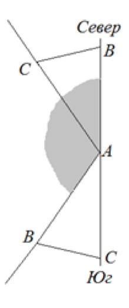

In the triangle ABC, the angle A is equal to 40$^{\circ}$. The triangle is randomly thrown onto a table. Find the probability that the vertex A lies east of the other two vertices.
Let the triangle fall so that the circumvention from A to B and then to C is counterclockwise. We draw a straight line through the vertex A, going strictly from south to north. The event "The vertex A is to the east of the other two" is realized if and only if the vertices B and C are in the western half-plane from the straight line. The figure shows the two extreme positions of the triangle, at which the vertices B and C are not located in the eastern half-plane. It can be seen that the ray AB must pass inside the painted corner, which is external to the corner A of the triangle. Consequently, the probability of this event is $($180-40$)$ / 360 = 7/18.

In the case of the opposite orientation of the triangle, the probability will obviously be the same.
7/18.